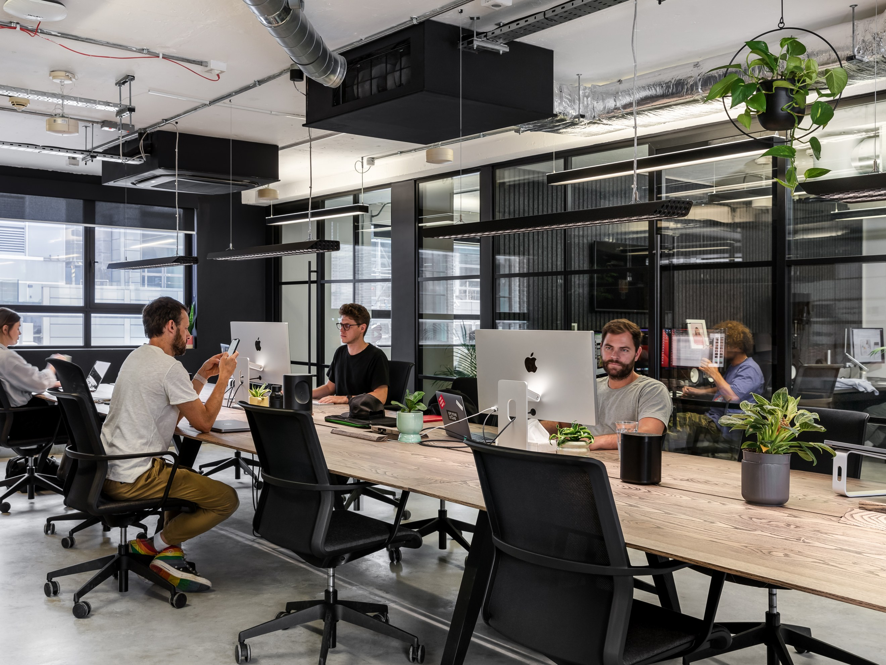

Creative Design Space Documentation

This documentation page outlines the operational workflows, workspace areas, and standards used across the Gutierrez Design Inc. creative studios.
Onboarding & Setup
New team members and design partners should begin by configuring their physical and digital environments to match the studio’s design standards.
Step 1: Initialize Workspace & Configure Asset Pipelines
UX/UI Design Space
The UX/UI Space is centered on human-computer interaction patterns, building structural wireframes, and crafting high-fidelity interactive digital prototypes.
Research → Wireframe → Prototype → User Test
3D Prototyping Lab
The 3D Prototyping Lab provides infrastructure for physical CAD modeling, slicer configuration, and high-precision FDM 3D printing iterations.
CAD Model → Squeeze/Slice → Print → Post-Process
Custom Modeling Station
This specialized station is dedicated to engineering custom part dimensions, analyzing micro-scale injection molding, and developing detailed LEGO physical layouts.
Concept Design → Digital Assembly → Part Audit → Build
Hardware & Systems Bench
Collaborators utilize this space to upgrade physical workstation capabilities, swap high-speed DDR4 SODIMM memory modules, and optimize local ethernet connectivity.
Audit Specs → Upgrade Hardware → Benchmark → Deploy
Design Success Pathway
Every project progresses through strict aesthetic and engineering milestones to ensure we consistently deliver high-performance, refined digital assets.
Ideate → Design → Refine → Standardize